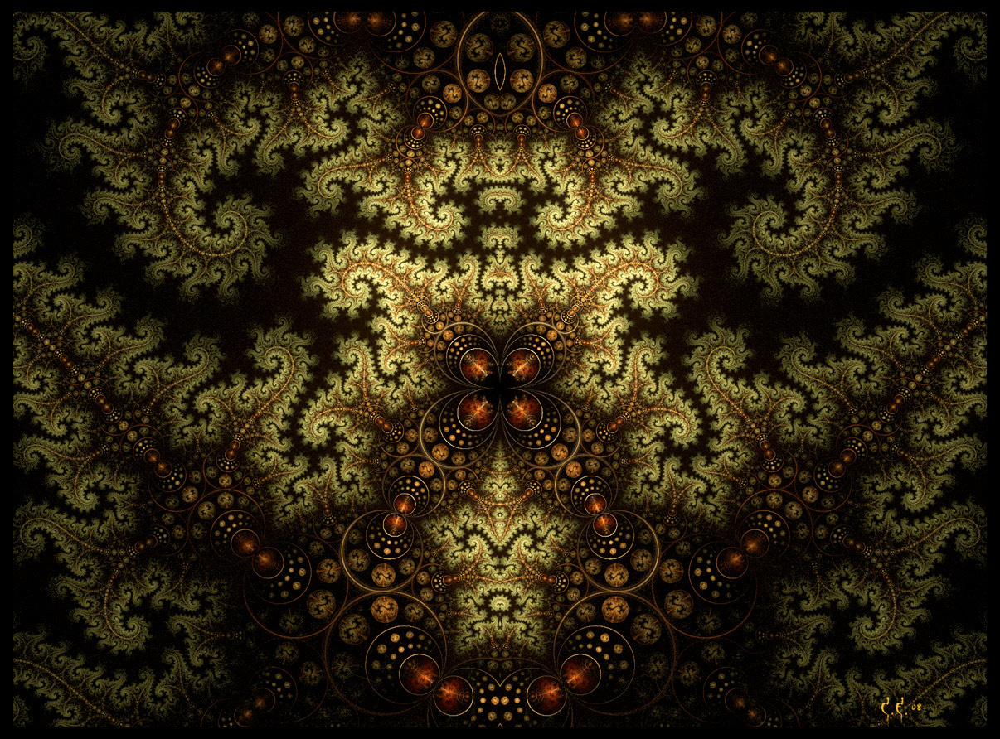

3 Разговор с лесом об осознанных сновидениях
Заглянула в лес пообщаться с лесными духами и посоветоваться насчет осознанных сновидений:
- Не нужны никакие техники для обучению ясности во сне. Оставь это. Ты должна понять сон изнутри. Тебе нужна лишь сила и направление. Направление это цель. Если тебе и нужно чему-то учиться, так это подавать себе команды. А для этого надо уметь их выполнять. Любые команды, которые ты себе подашь.
- Вы хотите сказать, мне нужно развивать силу воли и умение внушать?
- Горячо.
- Но мне также нужна хорошая техника для работы со сном, чтобы мои усилия давали лучший результат
- Сон - это ты. Все, что тебе надо, у тебя есть. Лучше подумай о том, что тебе мешает войти в сон. Вспомни, почему ты не хочешь этого делать
- я? Не хочу? Если бы я не хотела, я бы этим не занималась
- Хочет твой разум. Другая твоя часть чувствует страх, но ты о нем не помнишь. Ты и о нашем разговоре забудешь, если не соберешься. Вспомни ещё, что тебе мешает удерживать ясность
- Как вспомнить?
- Твоя беда и твоих друзей в том, что вы отлично научились разбирать, но не умеете собирать.
- Как это не умеем? Люди столько всего собрали - замки, машины
- По большей части это лишь перекладывание деталей с места на место. Человек собрал замок, но не собрал Дом.
- Вы имеете в виду под словом собирать зарождение какой-то новой сущности?
- Тепло
- Смотри, как ты говоришь: мне надо разобраться. Чтобы понять, тебе надо разобрать. А о том, что затем необходимо собрать, ты забываешь. Чтобы понять, ты должна разобрать и собрать. Или разобрать - ся и собрать-ся
- Пересобраться?
- Тепло. Твои глаза могут смотреть не только снаружи, но и изнутри. Смотри изнутри. Собери. Всё
- Но как научиться собирать?
- А как ты училась разбирать?
- Меня мир учил. Я не помню.
- Ты училась, разбирая. А сейчас начни собирать. Когда соберешь, ты поймёшь
- Я когда-нибудь собирала?
- Конечно
- Когда я рисовала, у меня иногда получалось собирать? Те мгновения, когда я ощущала, что в мире все встало на свои места
- Это оно
- И для осознания во сне, мне тоже надо собрать?
- Да. Сначала разобрать. Узнать, что тебе мешает. Затем собрать. Собрать понимание. Собрать сон
- Мне трудно удерживаться потемках сна
- Надо зажечь огонь осознания. Он периодически гаснет - нужен страж, бдительность, следящая за огнём. В шаги надо вложить силу, а огонь будет освещать выбранное направление. Дать себе установку, что я сделаю все, чтобы добиться результата, чего бы мне это ни стоило.
